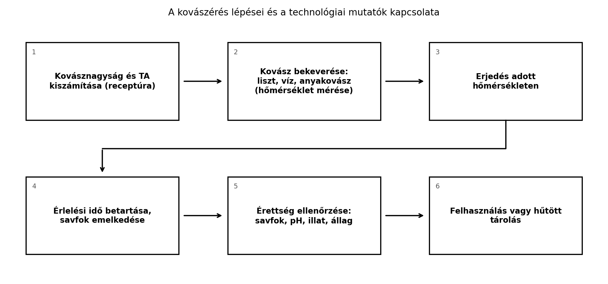

Hajnali műszakban a pék rozskenyeret gyárt. Az anyakovász friss, a liszt ugyanaz, mint tegnap, de a tegnapi kenyér savanyúbb lett a kelleténél. A kovász ma gyorsabban „megindult”, mert a műhely melegebb, és a segéd több vizet öntött a kovászba. A péknek döntenie kell: mennyi kovászt vegyen ki a tésztához, hány fokon és meddig érlelje, hogy a kenyér bélzete ne nyúlós, hanem rugalmas legyen, a héja pedig ne legyen keserű. Ehhez nem elég az érzék: a kovászolást technológiai mutatókkal kell vezetni. A kovásznagyság, a kovászsűrűség, a hőmérséklet és az érlelési idő együtt határozza meg, milyen savösszetételű, aromájú és állagú lesz a késztermék. A hibás mutatók nemcsak ízhibát okoznak, hanem az átsültséget és az eltarthatóságot is rontják.
A kovászolást úgy képzeld el, mint egy irányított erjesztést: lisztből, vízből és anyakovászból elindítasz egy olyan tésztát, amelyben a tejsavbaktériumok és a vadélesztő-gombák szabályozottan szaporodnak. A folyamatot a négy technológiai mutatóval szabályozod, ahogy az alábbi folyamatábra mutatja.

A sorrend lényeges: a kovásznagyságot és a TA-t a bekeverés előtt, a receptúrából számítjuk ki, mert bekeverés után már nem állíthatók. A folyamatábra azt is mutatja, hogy a kovász technológiai mutatói nem egymástól függetlenek: ha nagyobb a kovásznagyság, gyorsabb a savasodás; ha hígabb a kovász, más a savösszetétel; ha melegebb az erjesztés, rövidebb idő is elég lehet. A következő szakaszokban ezeket a mutatókat és hatásaikat pontosítjuk.
Definíció. Kovász (előtészta, sourdough). A kovász olyan lisztből, vízből és – rendszerint – érett anyakovászból vagy starterkultúrából készített, erjesztett tészta, amelyet nem önmagában sütnek meg, hanem a kész tésztába adagolnak. A kovászban tejsavbaktériumok és élesztőgombák (sütőélesztő vagy vadélesztő) együtt dolgoznak: savakat, szén-dioxidot, alkoholt és aromaanyagokat termelnek. A kovász lehet búza- vagy rozskovász, sűrű vagy folyékony.
A kovászolás célját és a mutatókat az alábbi mennyiségekkel írjuk le.
Összefüggés. A kovásznagyság képlete:
ahol a kovászba kerülő liszt tömege, pedig a teljes tésztához (kovász + főtészta) felhasznált összes liszt tömege.
A kovász sűrűségét a tésztakitermeléshez hasonlóan számoljuk, de csak a kovászra:
Ezt átírhatjuk a lisztre vetített vízszázalék segítségével is: .
Megjegyzés. A kovászsűrűséget gyakran egyszerűen TA-ként mondják, de mindig jelezni kell, hogy a kovász TA-járól, nem a kész tészta TA-járól van szó. A lisztre vetített százalékrendszert a Százalékszámítás és a lisztre vetített (sütőipari) százalék alfejezetben vezettük be.
Továbbvitt eredmény. A kovásznagyság, a kovász-TA, a hőmérséklet és az idő fogalma és számítása közvetlenül használatos a Kovászszámítások és a kovász dokumentálása alfejezetben, valamint az A kovászérés folyamatai és a kovász érettsége alfejezetben. A kenyérgyártáshoz a Búzakenyér és fehér kenyér előállítása során is erre építünk.
A kovászolás nem csupán egy hagyományos lépés, hanem négy, egymással összefüggő technológiai célt szolgál.
Erjesztés (biológiai lazítás). A kovászban lévő élesztőgombák és tejsavbaktériumok szén-dioxidot fejlesztenek. Ez a gáz a kész tésztában is lazít: a kenyér bélzete pórusos, a termék térfogata nagyobb. A kovászban az erjedés már a főtészta dagasztása előtt elindul, így a főtészta kelesztése gyorsabb és egyenletesebb lehet. A lazítást a szén-dioxid végzi; a savak nem lazítanak, de a sikér és a rozs pentozánjainak duzzadását, valamint az enzimek működését módosítják, ezzel a tészta nyújthatóságát és gázvisszatartását befolyásolják.
Savanyítás és tartósítás. A tejsavbaktériumok tejsavat és ecetsavat termelnek. A pH 6,0 körülről jellemzően 4,5–3,8 közé csökken. Ez a savas környezet gátolja a nemkívánatos mikrobákat, például a nyúlósodást okozó Bacillus fajokat vagy a penészeket. A savanyítás ezért egyszerre technológiai és élelmiszer-biztonsági funkció: a jól savanyított kenyér hosszabb ideig eltartható, és kevésbé romlik.
Aroma kialakítása. A kovászban a mikroorganizmusok tejsavat, ecetsavat, etanolt, észtereket és más illóanyagokat képeznek. Ezek adják a kovászos kenyér jellegzetes, enyhén savanykás, diós vagy ecetes illatát. A savösszetétel – különösen a tejsav és ecetsav aránya – határozza meg, hogy a termék inkább lágyan savanykás vagy csípősen ecetes jellegű lesz. Az aromához hozzájárulnak a liszt saját enzimjeinek és a mikroorganizmusok enzimjeinek bontástermékei is.
Sikérérlelés és tésztaszerkezet javítása. A savas közeg és a kovászban felszaporodott enzimek hatására a búzaliszt sikérhálózata lazább, nyújthatóbb lesz; a tészta nem feszül, egyenletesebben osztható és formázható. A rozslisztnél ez különösen fontos, mert a rozs sikérje gyenge, és a savanyítás nélkül a tészta ragacsos, nyúlós, sütésre alkalmatlan maradna.
Higiénia. A kovász mikroflórája érzékeny a szennyezésre. Az anyakovászt mindig tiszta, élelmiszeripari célra alkalmas edényben, letakarva kell tárolni. A kovász keveréséhez használt eszközök ne legyenek zsírosak, vegyszeresek vagy penészesek. A tisztítószer-maradék gátolhatja a tejsavbaktériumokat; ezért előkészületkor ellenőrizni kell, hogy az edények öblítése tiszta vízzel megtörtént.
HACCP. A kovász érlelése során a hőmérséklet és az idő egyúttal kritikus folyamatparaméter: ha a kovász túl hidegen vagy túl rövid ideig érlelődik, a savanyodás nem éri el a kívánt mértéket, ezért a kész tésztában a nemkívánatos mikrobák gátlása gyengébb lehet. Ha viszont túl magas hőmérsékleten, túl sokáig áll, a túlzott savasság már minőségi hiba. A konkrét határértékeket minden üzem a saját HACCP-tervében és technológiai lapján rögzíti: (ellenőrizendő: a pékség HACCP-terve, technológiai lapja, hatósági útmutató).
Definíció. A kovásznagyság (kovászhányad) megmutatja, hogy a teljes liszthányad hány százalékát erjesztjük kovásztésztaként. Minél nagyobb a kovásznagyság, annál több kovász jelenik meg a kész tésztában, annál erősebb a savanyító, ízesítő és lazító hatás.
A kovásznagyság jellemző tartományai termékcsoporttól függenek. Például búzakenyérhez 20–30% kovásznagyság gyakori, rozskenyérhez 40–60% is lehet (ellenőrizendő: üzemi technológiai lap, termékrecept). A pontos érték nem hatósági előírás, hanem technológiai választás: a nagyobb kovásznagyság általában erősebb ízt, savanyúbb jelleget ad, de a tészta savasságát is növeli, ezért a többi mutatót hozzá kell igazítani.
Hatása az érésre, savasságra, aromára. Nagyobb kovászhányad esetén a főtésztába kerülő kovász több savat és több aktív mikroorganizmust visz, ezért a főtészta erjedése gyorsabban indul, és a savasság gyorsabban emelkedik. Kisebb kovászhányad enyhébb, visszafogottabb aromát eredményez.
Definíció. A kovászsűrűség a kovász tésztakitermelése, tehát a kovászlisztre vetített liszt + víz arány. A sűrűbb kovász (TA kb. 150–160) kevesebb vizet tartalmaz, a közepes sűrűségű kovász (TA 160–180) a kettő között van, a híg, folyékonyabb kovász (TA 180–200 vagy több) több vizet (a besorolás tanulási példa: sűrű ≤ 160, közepes 160–180, híg ≥ 180; ellenőrizendő: üzemi technológiai lap), és ezáltal a mikroflóra környezete is megváltozik.
Hatása az érésre, savasságra, aromára. A kovász sűrűsége módosítja a mikroorganizmusok anyagcseréjét.
A kovász TA-ját a receptúrában rögzíteni kell, például „rozskovász TA 170” formában. A TA ismeretében a kovászlisztből és a kovász vízből egyértelműen kiszámítható a bekeverendő mennyiség.
Definíció. A kovászhőmérséklet az erjesztési hőmérséklet, amelyen a kovászt érleljük. Az optimális tartomány jellemzően 22 és 30 °C között van (ellenőrizendő: kultúrától és terméktől függően). A hőmérséklet döntően befolyásolja, hogy a homofermentatív (főként tejsavat termelő) vagy a heterofermentatív (tejsavat, ecetsavat, CO₂-t termelő) tejsavbaktériumok kerülnek-e előtérbe, és milyen gyorsan erjed a kovász.
Hatása az érésre, savasságra, aromára.
A hőmérsékletet szúrószondás digitális hőmérővel mérjük a kovász belsejében (a szondát használat előtt és után tisztítjuk, fertőtlenítjük); üveghőmérő az üzemben nem használható. Az infravörös hőmérő csak a felszín hőmérsékletét mutatja, tájékozódásra jó. A mérési értéket a kovásznaplóba írjuk. A hőmérséklet szabályozására hűtött vízzel, hűtőtérben való érleléssel vagy fűtött kelesztőkamrával van lehetőség.
Definíció. Az érlelési idő az az időtartam, amely alatt a kovász a kívánt savasságot, aromát és érettséget eléri. Az érlelési idő nem önálló mutató: mindig a kovásznagysággal, a sűrűséggel és a hőmérséklettel együtt értelmezendő.
Hatása az érésre, savasságra, aromára. Hosszabb érlelés növeli a savtartalmat, de a kovász végül „túlérhet”: a savasság túlzott lesz, a tészta szerkezete elgyengül, az íz kellemetlenül csípős vagy keserű lesz. Rövid idő esetén a savasság és az aroma nem bontakozik ki. Az érett kovász jellemzőit – például a savfokot, a pH-t, az illatot és az állagot – az A kovászérés folyamatai és a kovász érettsége alfejezetben tárgyaljuk részletesen.
Összefoglaló táblázat a négy mutató hatásáról:
| Mutató | Növelés hatása | Csökkentés hatása |
|---|---|---|
| Kovásznagyság | erősebb sav, gyorsabb érés | enyhébb íz, lassabb érés |
| Kovász-TA (hígabb) | több tejsav, gyorsabb érés | kevesebb tejsav, több ecetsav |
| Hőmérséklet | gyorsabb érés, több tejsav | lassabb érés, több ecetsav |
| Érlelési idő | több sav, erősebb aroma | kevesebb sav, gyengébb aroma |
A búza- és a rozskovász célja részben azonos, de a két gabona eltérő összetétele miatt a hangsúlyok különböznek.
Búzakovász. A búzaliszt viszonylag erős, rugalmas sikérrel rendelkezik. A búzakovászt elsősorban aroma- és tésztaszerkezet-javításra használjuk, nem feltétlenül a savanyításra. A kovásznagyság általában kisebb, a TA inkább sűrűbb (kb. 150–170), a hőmérséklet mérsékelt (24–28 °C), az érlelési idő közepes. A cél az, hogy a kovász savassága enyhe, a búzakenyér bélzete lágy, a héja ropogós legyen, a sikérhálózat ne gyengüljön túl. A tejsav:ecetsav arányban a tejsav kerülhet előtérbe.
Rozskovász. A rozslisztben sok pentozán és aktív amiláz van. A pentozánok vizet vesznek fel, a tészta nyálkás, az amilázok pedig a keményítőt gyorsan bontják, ezért a rozstészta savanyítás nélkül ragacsos, sütés közben összeesik, a bélzet nyúlós. A savanyítás csökkenti a pH-t, gátolja az amilázokat, és a pentozánok is jobban duzzadnak. A rozskovász ezért erőteljesebben savanyít, gyakran nagyobb kovásznagysággal (40–60%) készül. A rozskovászt gyakran közepes sűrűséggel (TA 160–180, a sűrű–közepes tartományban) és alacsonyabb hőmérsékleten (22–26 °C), hosszabb idővel vezetik, ami az ecetsav arányát növeli; hígabb, melegebb vezetéssel enyhébb, tejsavasabb kovász kapható (ellenőrizendő: üzemi technológiai lap, sütőipari szakirodalom). Az ecetsav nagyobb aránya adja a rozskenyér jellegzetes, markáns ízét.
A különbségek nem merev szabályok: a termék receptje és a liszt minősége alapján a pék finomítja a mutatókat. A lényeg, hogy a rozskovászt a savasságért is vezetjük, a búzakovászt inkább az aromáért és a tésztaérésért.
Adott: Egy kenyértésztához összesen 20 kg lisztet használunk. A kovászhoz 6 kg lisztet készítünk be.
Keresett: kovásznagyság, .
Képlet:
Behelyettesítés:
Ellenőrzés: a kovászliszt kisebb, mint az összes liszt, ezért a százalék 0 és 100 között van. A 30% azt jelenti, hogy a teljes liszthányad közel harmada erjed kovászként.
Adott: A kovászhoz 6 kg lisztet és 4,8 kg vizet mérünk be.
Keresett: a kovász sűrűsége, .
Képlet:
Behelyettesítés:
Ellenőrzés: a TA = 180 azt jelenti, hogy 100 kg lisztre 80 kg víz jut a kovászban, vagyis a lisztre vetített vízszázalék . Ez a híg kovász alsó határa (TA ≥ 180).
Adott: Rozskenyér gyártásához 15 kg teljes lisztet használunk. A recept szerint a kovásznagyság 40%, a kovász TA-ja 160.
Keresett: mennyi lisztet és vizet vegyünk a kovászba?
Megoldás lépésenként:
Ellenőrzés: a kovász TA-ja visszaszámolva: , tehát a számítás helyes.
Egy nyári reggelen a pék azt tapasztalta, hogy a rozskovász már két óra után nagyon erősen savanyú illatú, és a kovász térfogata alig nőtt, viszont a pH gyorsan csökkent. A kenyér később keserű héjú, tömör bélzetű lett. Az ok: a műhely hőmérséklete egy hőhullám miatt 32 °C-ra emelkedett, a kovászt ugyanúgy 28 °C-ra állították be, de a tényleges hőmérséklet magasabb lett, és az érlelési időt nem csökkentették. A megoldás az volt, hogy hűtött vizet használtak, a kovász hőmérsékletét 24 °C-ra vitték le, és az érlelési időt fél órával rövidítették. Ezenkívül a kovásznaplóban feltüntették a hőmérsékletet, hogy a következő műszak is lássa, miért változtattak. Ez az eset mutatja, hogy a mutatók nem rögzíthetők mereven: a környezet változásához igazítani kell őket.
A kovász minőségét a négy technológiai mutató mérése és az érzékszervi jelek együttese adja.
1. feladat (A) Definiálja a kovásznagyságot, és adja meg képletét a mennyiségek megnevezésével.
2. feladat (A) Egy kovászhoz 4 kg lisztet és 3 kg vizet használunk. Számítsa ki a kovász tésztakitermelését.
3. feladat (B) Egy pékség 25 kg lisztből készít kenyértésztát. A recept szerint a kovásznagyság 28%, a kovász TA-ja 170. Mennyi lisztet és vizet kell bekeverni a kovászba?
4. feladat (B) Egy rozskovász TA-ját 160-ról 190-re növeljük, a kovásznagyság és a hőmérséklet változatlan. Hogyan változik várhatóan a kovász savasságának típusa és az érlelési idő?
5. feladat (C) A nyári műszakban a búzakovász 30 °C-on 3 óra alatt túl savanyú lett. Javasoljon legalább két olyan változtatást a technológiai mutatókban, amely csökkenti a túlzott savanyodást, és indokolja, miért hatnak.
6. feladat (D) Tervezze meg egy rozskovász mutatóit 10 kg rozskenyérlisztre, ha a termék markáns, enyhén ecetes ízt igényel, és a műhely hőmérséklete 26 °C. Adja meg a kovásznagyságot, a kovász-TA-t, a hőmérsékletet és az érlelési időt tanulási példaként, és indokolja a választást.
Önellenőrzés – válaszok
Feladatok megoldása
1. feladat (A) A kovásznagyság a kovászba kerülő liszt tömegének a teljes tésztához felhasznált összes liszt tömegéhez viszonyított százalékos aránya. Képlete: .
2. feladat (A)
3. feladat (B) A kovászliszt: . A TA 170-ből a vízszázalék: . A víz: .
4. feladat (B) A magasabb TA hígabb kovászt jelent, ezért a tejsav képződése kerül előtérbe, az ecetsav aránya csökken. A hígabb kovász gyorsabban savanyodik, így az érlelési idő várhatóan rövidül.
5. feladat (C) A túlzott savanyodás csökkenthető például: (1) a hőmérséklet csökkentésével 24 °C-ra, mert ezzel lassul az erjedés és kevesebb sav képződik; (2) az érlelési idő rövidítésével, vagy (3) a kovásznagyság csökkentésével, hogy kevesebb kovász kerüljön a tésztába. Indoklás: mindegyik csökkenti a mikroorganizmusok rendelkezésére álló időt vagy aktivitását, ezáltal mérsékli a savtermelést.
6. feladat (D) Tanulási példa: kovásznagyság 45% (10 kg liszthez 4,5 kg kovászliszt), kovász-TA 170 (a kovászhoz 4,5 kg liszt és 3,15 kg víz, mert 70% víz), hőmérséklet 24 °C, érlelési idő 18–20 óra. Indoklás: a rozskenyérhez nagyobb kovászhányad kell az erőteljes savanyításhoz; a 170-es TA közepes sűrűségű (a 160–180-as tartományban), nem híg, így a tejsav és ecetsav egyensúlya megfelelő; a 24 °C alacsonyabb hőmérsékleten lassú érést és az ecetsav arányának növelését segíti, ami a markáns, enyhén ecetes ízt adja; a hosszú idő lehetővé teszi az aroma kialakulását. (ellenőrizendő: üzemi technológiai lap, liszt- és kultúraadatok)
A kovász olyan lisztből, vízből és anyakovászból készített erjesztett tészta, amelyet a kész tésztába adagolnak. A kovászolás célja a biológiai lazítás, a savanyítás és tartósítás, az aroma kialakítása, valamint a sikérérlelés. A kovász vezetését négy technológiai mutató határozza meg: a kovásznagyság (), amely a kovászliszt aránya a teljes lisztben; a kovászsűrűség (), amely a kovász víz-liszt arányát jellemzi; a kovászhőmérséklet; és az érlelési idő. Nagyobb kovásznagyság, magasabb TA (hígabb kovász), magasabb hőmérséklet vagy hosszabb idő gyorsabb érést és több savat eredményez, de a savösszetétel eltérő: sűrűbb, hidegebb, lassúbb feltételek mellett az ecetsav, hígabb, melegebb, gyors feltételek mellett a tejsav kerül előtérbe. A rozskovászt a rozsliszt amilázaktivitása miatt erősebben savanyítják, mint a búzakovászt. A mutatók és képleteik a Kovászszámítások és a kovász dokumentálása és az A kovászérés folyamatai és a kovász érettsége alfejezetekben, valamint a kenyérgyártásban kerülnek gyakorlati alkalmazásra.